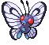

-
Bulbasaur #001

- Grama
- Venenoso
Há uma semente de planta em suas costas desde o dia que este pókemon nasce.A semente cresce lentamente.
-
Ivysaur #002

- Grama
- Venenoso
Quando o bulbo em suas costas cresce grande, ele parece perder a capacidade de ficar em suas patas traseiras.
-
Venusaur #003

- Grama
- Venenoso
Um aroma encantador brota de sua flor. A fragrância acalma aqueles envolvidos em uma batalha.
-
Charmander #004

- Fogo
Tem preferência por coisas quentes. Quando chove, diz-se que o vapor jorra da ponta da cauda.
-
Charmander #005

- Fogo
Tem uma natureza bárbara. Em batalha, ele chicoteia sua cauda ardente e corta com garras afiadas.
-
Charizard #006

- Fogo
- Voador
Ele cospe fogo que é quente o suficiente para derreter pedregulhos. Pode causar incêndios florestais ao soprar chamas.
-
Squirtle #007

- Água
Quando retrai seu pescoço longo em sua concha, ele esguicha água com força vigorosa.
-
Wartortle #008

- Água
É reconhecido como um símbolo de longevidade. Se sua casca tem algas, esse Wartortle é muito antigo.
-
Blastoise #009

- Água
Ele esmaga seu inimigo sob seu corpo pesado para causar desmaios. Em um beliscão, ele se retirará dentro de sua concha.
-
Caterpie #010

- Inseto
Para proteção, ele libera um mau cheiro horrível da antena em sua cabeça para afastar os inimigos.
-
Metapod #011

- Inseto
Em batalha, ele bate as asas em grande velocidade para liberar poeira altamente tóxica no ar.
-
Butterfree #012
- Inseto
- Voador
Ele esmaga seu inimigo sob seu corpo pesado para causar desmaios. Em um beliscão, ele se retirará dentro de sua concha.